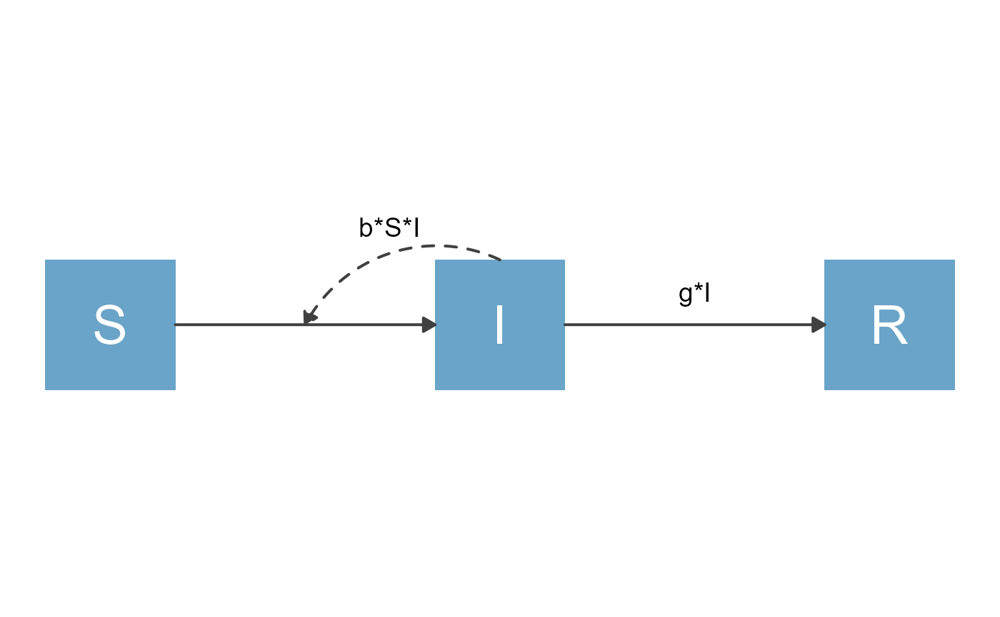
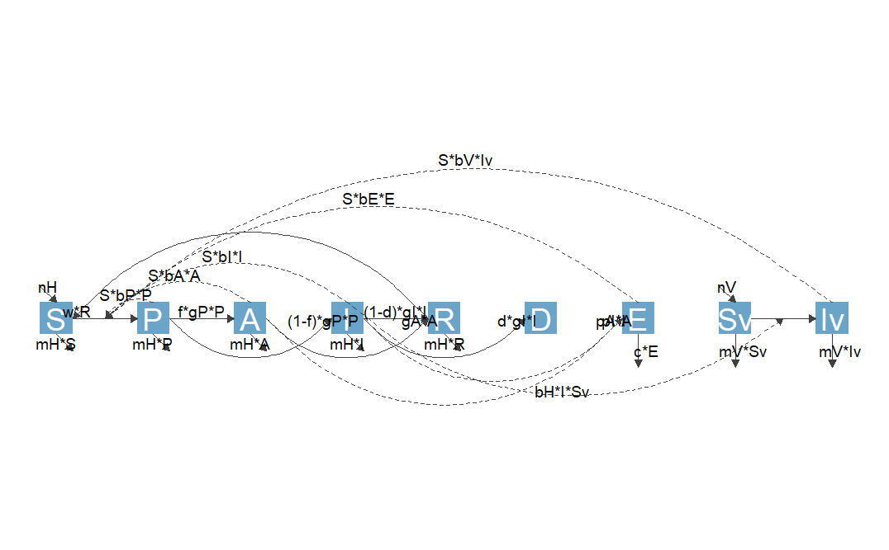
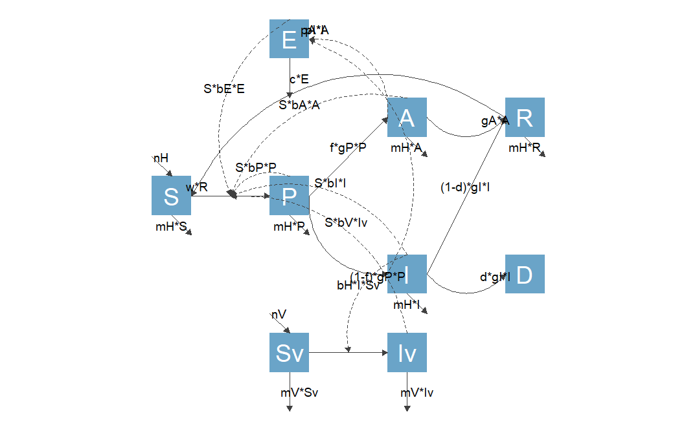

vignettes/G_flowdiagramr_and_modelbuilder.Rmd
G_flowdiagramr_and_modelbuilder.RmdThe developers of flowdiagramr have also been developing an R package called modelbuilder which allows users to graphically build and analyze compartmental simulation models. In fact, flowdiagramr started as a function inside modelbuilder to draw diagrams of user-built models. At some point, we decided to make flowdiagramr a stand-alone package. But it still works with and is used by modelbuilder.
This brief vignette is for those users of modelbuilder who create and save a model and want to use flowdiagramr to generate a diagram for that model outside the auto-generated one shown inside modelbuilder.
Once a user has built a model with modelbuilder, they can save it as an Rds file. This file contains a single object, the user-created model specified as a list object. Since modelbuilder models and flowdiagramr models are slightly different, we provide a convenience function that converts one format into the other.
This is a very simple process, and is done with the function convert_from_modelbuilder. This function takes as input the modelbuilder object and produces a list that conforms to the flowdiagramr model specification. The following examples illustrate this.
Assume you built a basic SIR model with modelbuilder and saved it as an R object inside a .Rds file. First, we load the file and assign it to some variable.
mbmodel <- readRDS('SIR_model.Rds')Next, we convert the object.
mymodel <- convert_from_modelbuilder(mbmodel)If you print the content, you can see it has the structure needed for flowdiagramr.
print(mymodel)
#> $varlabels
#> [1] "S" "I" "R"
#>
#> $varnames
#> [1] "Susceptible" "Infected" "Recovered"
#>
#> $flows
#> $flows$S_flows
#> [1] "-b*S*I"
#>
#> $flows$I_flows
#> [1] "+b*S*I" "-g*I"
#>
#> $flows$R_flows
#> [1] "+g*I"You can now proceed with the usual steps.
diagram_list <- prepare_diagram(mymodel)
my_diagram <- make_diagram(diagram_list)
plot(my_diagram)
Just to show one more example, this is a model from the modelbuilder example library called Complex ID control. It is a model that includes a good number of details and allows exploration of different intervention strategies. If you are not too familiar with compartmental models yet, just consider it as an example that illustrates the work flow. You can find some more details about the model in the modelbuilder package, or even more details in another of our packages, DSAIDE, which is targeted toward learning about such infectious disease models.
First, we load the model, then convert it and print it.
mbmodel <- readRDS('Complex_ID_Control.Rds')
mymodel <- convert_from_modelbuilder(mbmodel)
print(mymodel)
#> $varlabels
#> [1] "S" "P" "A" "I" "R" "D" "E" "Sv" "Iv"
#>
#> $varnames
#> [1] "Susceptible" "Presymptomatic"
#> [3] "Asymptomatic" "Symptomatic"
#> [5] "Recovered" "Dead"
#> [7] "Pathogen in Environment" "Susceptible Vector"
#> [9] "Infected Vector"
#>
#> $flows
#> $flows$S_flows
#> [1] "+nH" "-S*bP*P" "-S*bA*A" "-S*bI*I" "-S*bE*E" "-S*bV*Iv" "+w*R"
#> [8] "-mH*S"
#>
#> $flows$P_flows
#> [1] "+S*bP*P" "+S*bA*A" "+S*bI*I" "+S*bE*E" "+S*bV*Iv"
#> [6] "-f*gP*P" "-(1-f)*gP*P" "-mH*P"
#>
#> $flows$A_flows
#> [1] "+f*gP*P" "-gA*A" "-mH*A"
#>
#> $flows$I_flows
#> [1] "+(1-f)*gP*P" "-(1-d)*gI*I" "-d*gI*I" "-mH*I"
#>
#> $flows$R_flows
#> [1] "+gA*A" "+(1-d)*gI*I" "-w*R" "-mH*R"
#>
#> $flows$D_flows
#> [1] "+d*gI*I"
#>
#> $flows$E_flows
#> [1] "+pI*I" "+pA*A" "-c*E"
#>
#> $flows$Sv_flows
#> [1] "+nV" "-bH*I*Sv" "-mV*Sv"
#>
#> $flows$Iv_flows
#> [1] "+bH*I*Sv" "-mV*Iv"As promised, this is a much more complex model. We don’t expect the default diagram for this model to look great, but let’s give it a try. Instead of directly plotting it, we are saving the diagram and loading from a file, otherwise the dimensions will look too squished.
diagram_list <- prepare_diagram(mymodel)
my_diagram <- make_diagram(diagram_list)
ggplot2::ggsave('Complex_ID_Control.png',my_diagram)
The diagram is not ideal. But you now know how to make it better, once you have done the model conversion, you can use the usual approaches. As an example, let’s specify the layout for the variables/nodes. We can do that by adding varlocations to the mymodel object.
The rationale of how to place the variables is determined by the meaning of each of them and what makes logical sense. I’m not discussing this here, if you want to learn more about the model, see the Complex Control Scenarios app inside DSAIDE.
mymodel$varlocations = matrix(data = c("","E","","",
"", "", "A", "R",
"S", "P", "", "",
"", "", "I", "D",
"", "Sv", "Iv", ""), nrow = 5, byrow = TRUE)TO DO. I’m also showing the compartment names instead of their labels to make things a bit clearer.
diagram_list <- prepare_diagram(mymodel)
my_diagram <- make_diagram(diagram_list)
ggplot2::ggsave('Complex_ID_Control2.png',my_diagram)
This is better, but of course still not quite good enough. Fortunately, you have learned how to use flowdiagramr to fairly easily turn this into a publication-quality diagram 😁.